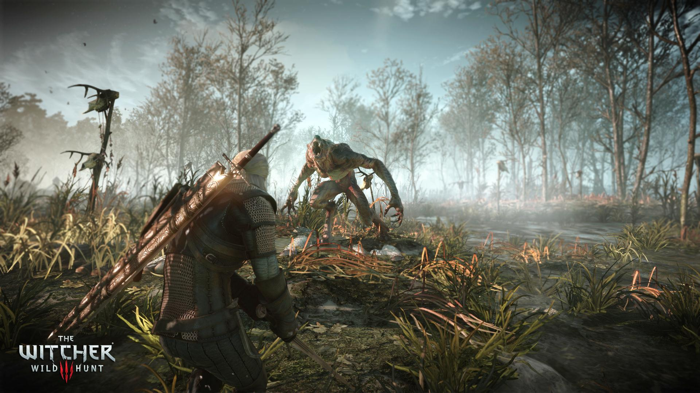

Latest Project



Hey welcome to my portfolio, Myself Adithya Gattadi a decent Frontend developer, Web designer and a student from CSE Department at VIT-Vellore
ResumeGreetings! I'm Adithya Gattadi, representing the CSE Department at VIT-Vellore. As a dedicated frontend developer, I am passionate about crafting immersive and user-centric web experiences. Armed with a robust skill set in HTML, CSS, and JavaScript, I specialize in constructing visually stunning and responsive websites. Beyond development, I also excel as a Web Designer, boasting a keen understanding of UI/UX principles. My commitment revolves around writing code that is not only clean and maintainable but also aligns with the latest industry trends. Collaborating seamlessly with cross-functional teams, I bring designs to life and deliver top-notch solutions that cater to user needs. Additionally, I am a proficient MERN stack developer with a track record of engaging in diverse and intriguing projects.
Click on read more to get more information about me
A full-stack web developer is a skilled professional proficient in both front-end and back-end technologies. They creating visually engaging user interfaces using HTML, CSS, and JavaScript, often incorporating popular frameworks like React or Angular. On the back end, they manage server-side logic and databases. Full-stack developers are well-versed in version control systems like Git and are capable of deploying applications to cloud platforms like AWS or Azure.
Read MoreA web designer is a creative professional who specializes in designing and creating visually appealing and user-friendly websites. They combine their artistic skills with technical knowledge to design layouts, select color schemes, and choose typography that aligns with the client's branding and target audience. Web designers play a crucial role in crafting the overall user experience and ensuring that websites are both aesthetically pleasing and functional.
Read MoreMERN stack is a software stack that includes four open-source technologies: (MongoDB, Express.js, React, and Node.js). These components provide an end-to-end framework for building dynamic web sites and web applications. Among these technologies MongoDB is a database system, Node.js is a server-side runtime environment, Express.js is a web framework for Node.js and React is a client-side JavaScript library used for building user interfaces.
Read More
Acting as a Technical Team Member within the IEEE - IAS chapter at VIT-Vellore, and have actively contributed to numerous projects. Notably, our IEEE - IAS chapter is recognized as one of the top chapters at VIT.
Read MoreAs an Ineuron member, I participated in an offline hackathon centered around Full Stack Web Development hosted by Ineuron. Additionally, I completed a comprehensive Web Development course on the same platform.
Read MoreServing as a Core Committee Member of IoThinc at VIT-Vellore, I have completed a Web Development course and have been actively involved in various projects. IoThinc stands out as one of the premier clubs at VIT.
Read MoreMy inaugural remote internship, extended by Oasis Infobyte, was centered around frontend development, harnessing the power of HTML, CSS, and JavaScript. Basically I designed the Landing page, Portfolio and Temparature converter by using JS
Read MoreDuring my subsequent remote internship with Prodigy Infotech, I delved into frontend development, utilizing HTML, CSS, JavaScript, and Bootstrap. Upon completion, I received a certification letter as well as a letter of recommendation.
Read MoreIn another remote internship, extended by CodeClause, I focused on frontend development, employing HTML, CSS, JavaScript, and Bootstrap. Upon successful completion, I received a certification letter, letter of recommendation, and swags as well.
Read More
.png){kind=link}